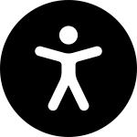

About
I'm George, a software developer specialising in JavaScript.
I've been building web apps since 2013. I started out with PHP/MySQL development and have spent the past eight years working with JavaScript and modern web technology, including React.
I have a strong knowledge of web accessibility, having worked on dozens of apps to improve accessibility for NatWest, the NHS, and UK government.
In my spare time I paint, read and watch far too many Law & Order repeats on Channel 5.
Projects
Company Website
In 2022-23, I designed and built the new company website for Blazie. I used JAMstack to boost the site's performance (no server-side rendering) while using Netlify as a host to add CMS capability.
Skills: JavaScript, Jekyll, Netlify, CMS, HTML5, CSS3, Sass
Mobile Banking Apps
From 2019 to 2022, I implemented accessibility in various mobile and desktop banking apps, working with React components, JavaScript, HTML and CSS to build interfaces that were WCAG 2.1-compliant.
Skills: React, JavaScript, Jira, HTML5, Web Accessibility, Web Content Accessibility Guidelines (WCAG)
QCoE Accessibility Team Training
In 2021 I trained three members of the QCoE Accessibility Team at NatWest. The training involved in-depth discussions, analysis and demonstrations of common WCAG accessibility standards and techniques.
QCoE Accessibility Team was recognised as the Testing Team of the Year at the European Software Awards in November 2022.
Skills: Training & Collaboration, JavaScript, HTML, Web Accessibility
Accessible Bank Statements
In 2017, I successfully led a project to make customer bank statements accessible.
I was tasked with implementing a PDF structure that would be accessible to all major screen readers, using the existing codebase and maintaining the document layout across brands.
I collaborated with the bank's design, access-ibility and software development teams.
Skills: C# .NET, PostScript, JAWS Screen Reader
Experience
JavaScript Developer
Blazie (London, UK)
June 2015 - Present
I work in a team of 10 engineers and testers to analyse, design and implement accessible frontends for desktop, mobile and web applications in JavaScript, HTML and CSS. I've worked with virtually every type of app to make the frontend accessible. Between 2019-2022 I was an accessibility consultant to NatWest, constulting on their UIs and frontends for accessibility.
I work both remotely and on-site at client offices across a range of industries including finance, healthcare, law, telecommunications and government
Marketing Manager
Elexsys (Cape Town & Johannesburg, ZA)
January 2013 - March 2015
Hired as the marketing director for Elexsys, an engineering start-up based in Cape Town, South Africa. I was tasked with developing the company's existing business strategy (sales of precision measurement equipment). I generated sales through a mix of direct, email and digital marketing.
I expanded our product range by brokering representation for new suppliers, many of whom had never been represented in South Africa before. I attended sales conferences in Spain, the UK and Indonesia to discuss new products and prospects. In February 2014, I relocated to Johannesburg to open and manage a new branch in Parktown North.
Skills
-
 React
React
-
 JavaScript
JavaScript
-
 HTML5
HTML5
-
 CSS3
CSS3
-  Accessibility
-
 GitHub
GitHub
-
 Linux
Linux
-
 Jira
Jira
Contact
If there's a project or an opportunity you'd like to discuss, get in touch: